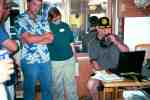

(1536x1024 2071K) (500x333 34K) |
Rick Fletcher KG6IAL operates the OSCAR 40 Satellite station.
(photo by Ian Kluft KO6YQ)
|

(1536x1024 2173K) (500x333 37K) |
A small crowd gathers in the motor home while
Rick Fletcher KG6IAL operates the OSCAR 40 Satellite station
during a voice contact to New Zealand.
(photo by Ian Kluft KO6YQ)
|
(1536x1024 1980K) (500x333 20K) |
Some of the teens and Grant Bowman K6CBK
(checking his handheld radio)
visit the LEO Satellite station at dusk.
The LEO station is not operating while there
are no satellites in view but it was always one of the
showcase stations at the site.
Many demonstrations and tours came through here even when
satellites weren't in view.
(photo by Ian Kluft KO6YQ)
|
(1536x1024 1844K) (500x333 16K) |
Sunset at the WVARA Field Day site.
(photo by Ian Kluft KO6YQ)
|
(1536x1024 1926K) (500x333 20K) |
Sunset at the WVARA Field Day site.
(photo by Ian Kluft KO6YQ)
|
(1536x1024 2111K) (500x333 29K) |
In the VHF/UHF station tent, left to right:
Bill Ashby N6FFC, Brian Goldberg KG6BKI,
and two other operators we couldn't identify for the photo.
If you think the tent looks a little old fashioned,
it's one that Bill usually uses for Civil War re-enactments.
(photo by Ian Kluft KO6YQ)
|
(1536x1024 2018K) (500x333 18K) |
Sunset at the WVARA Field Day site.
(photo by Ian Kluft KO6YQ)
|
(1536x1024 2426K) (500x333 36K) |
Sunset at the WVARA Field Day site.
Site videographer Ron Garcia KG6BRT takes a shot of the sunset.
(photo by Ian Kluft KO6YQ)
|
(1536x1024 2428K) (500x333 37K) |
Some people are socializing at the central food area under the
lookout tower frame.
After sunset, the crews settle in for their evening shift
or take a nap before their overnight shift.
(photo by Ian Kluft KO6YQ)
|
(1536x1024 2502K) (500x333 44K) |
We call this the "residential area". This area is set aside for
sleeping tents. No stations are placed here in order to keep it
quiet overnight.
(photo by Ian Kluft KO6YQ)
|
(1536x1024 2284K) (500x333 36K) |
The parking area on Sunday morning.
(photo by Ian Kluft KO6YQ)
|
(1536x1024 2347K) (500x333 46K) |
Fred KQ6OB and Fred AE6CW talk as the food crew prepares breakfast
in the background.
(photo by Ian Kluft KO6YQ)
|
(1536x1024 2250K) (500x333 36K) |
Humorous custom sign on Svend's truck:
"Danger: Ham Radio Zone - Turn Off All Blasting Equipment".
(photo by Ian Kluft KO6YQ)
|
(1536x1024 2035K) (500x333 36K) |
Rick Fletcher KG6IAL watches as Mike Polkinghorn K6PUD operates
the OSCAR 40 Satellite station.
(photo by Ian Kluft KO6YQ)
|
(1536x1024 1874K) (500x333 17K) |
WVARA fills the sky with aluminum on Field Day.
In this photo, the 20m SSB station's antenna sits atop WVARA's
mobile tower.
This is at the far eastern end of the site.
(photo by Ian Kluft KO6YQ)
|
(1536x1024 2167K) (500x333 32K) |
Some of the stations on the east side of the site,
left to right: 15m SSB (brown tent),
LEO Satellite (white/yellow tent w/ blue tarp),
OSCAR 40 Satellite (in motor home).
Wes Stone, LEO Satellite station assistant,
stands between the satellite stations.
(photo by Ian Kluft KO6YQ)
|
(1536x1024 2121K) (500x333 35K) |
This canopy at the gate in the fence makes the entrance to the
satellite stations area.
15M SSB is also within the fenced area to the left.
(photo by Ian Kluft KO6YQ)
|
(1536x1024 2053K) (500x333 29K) |
The satellite antennas aim at the sky.
Both sets have their own azimuth-elevation 3D rotators
in order to follow satellites as the cross the sky as fast
as 17,000 mph (for LEO/Low Earth Orbit satellites.)
On the left is the UHF/VHF station antennas for the LEO
satellites. For example, the Space Station is a LEO satellite.
These contacted satellites at slant-line distances no further
than about 1500 miles away, with contacts to Hams as far as Hawaii.
On the right is the Rick Fletcher KG6IAL and Jean Fletcher KG6IAK's
OSCAR 40 antennas.
The OSCAR 40 satellite is in a highly elliptical orbit,
which was successfully contacted at slant-line distances up to
40,000 miles away, with contacts as far as New Zealand.
(photo by Ian Kluft KO6YQ)
|
![[picture]](pa13451097062-tn.jpg)
(1536x1024 2154K) (500x333 41K) |
Rick Fletcher KG6IAL and Wes outside the satellite stations.
(photo by Ian Kluft KO6YQ)
|
(1536x1024 2026K) (500x333 28K) |
The LEO Satellite station,
equipment left to right:
power supply,
Yaesu FT-847 satellite-enabled amateur radio
at radio operator's position,
antenna rotator controls,
satellite tracking computer (Linux laptop)
at tracking operator's position,
contest logging computer (Linux desktop)
at logging operator's position,
and color printer.
The orange fiberoptic cable seen above connects to the
WVARA Field Day site network.
(Yes, we implemented "fiber to the tent" for a weekend event.)
(photo by Ian Kluft KO6YQ)
|
(1536x1024 2080K) (500x333 25K) |
The sign on the LEO Satellite station has an artist's concept
image of the International Space Station, because it has
a Ham Radio aboard and was the primary goal for this station.
(We spoke with the station commander but he didn't repeat our
callsign back to us for confirmation so we couldn't log the contact.
Darn!)
The sign also tells visitors the hours the station
would be in operation,
which was chosen for times there would be satellites in the sky
above us and when the other satellite station wasn't operating.
We could only operate one satellite station at any given time
due to a snafu in the ARRL Field Day Rules.
We gave priority to the OSCAR 40 station for the entire OSCAR 40 pass
from midnight to 8:30 Sunday morning.
A rare event for Field Day, this allowed the LEO station operators
to sleep (or help keep other stations running through the night.)
(photo by Ian Kluft KO6YQ)
|
(1536x1024 1736K) (500x333 16K) |
The sign on the OSCAR 40 Satellite station has an artists concept
image of the AMSAT OSCAR 40 satellite (originally known as Phase-3D
during construction.)
The sign also tells visitors the hours the station
would bein operation,
which was chosen for the 8-hour pass of AO-40 overnight
during Field Day.
We could only operate one satellite station at any given time
due to a snafu in the ARRL Field Day Rules.
We gave priority to the OSCAR 40 station for the entire OSCAR 40 pass
from midnight to 8:30 Sunday morning.
(photo by Ian Kluft KO6YQ)
|
(1536x1024 2150K) (500x333 32K) |
Tarps shade the LEO Satellite station from the afternoon Sun.
The orange fiberoptic cable and red safety lines run the network
from the Satellite stations to the 15m SSB station.
(photo by Ian Kluft KO6YQ)
|
(1536x1024 2072K) (500x333 30K) |
A view of the east end of the site,
left to right: 20m Digital station (tent),
10m CW antenna (low mast), 10m CW station (tent),
15m SSB antenna (on tower trailer),
20m SSB antenna (on tower trailer),
20m SSB station (motor home),
40m SSB antenna (behind water tank).
(photo by Ian Kluft KO6YQ)
|
(1536x1024 1997K) (500x333 37K) |
The LEO Satellite station hides under its shade tarps.
The tarps are tied off to the awning for the motor home
where the OSCAR 40 satellite station is.
(photo by Ian Kluft KO6YQ)
|
(1536x1024 1831K) (500x333 26K) |
Operating the LEO Satellite station, left to right:
Wes Stone (satellite tracking/antenna controls),
Ian Kluft KO6YQ (operating the satellite radio),
Robbie Iannucci K6RAI.
In this photo,
we are contacting via amateur satellite a Ham who is in Arizona.
(photo by Ron Garcia KG6BRT)
|
(1536x1024 1941K) (500x333 21K) |
Between satellite passes, we have left the VHF/UHF satellite
antennas aimed straight up.
(photo by Ian Kluft KO6YQ)
|
(1536x1024 2097K) (500x333 27K) |
Mike K6PUD and Fred KQ6OB at Mike's 10m CW station.
The fact that this station was here at all was a triumph for
Mike and for WVARA.
Mike's house burned down in an accidental fire 3 weeks before
Field Day, and everything he had planned for this station was lost.
Some club members loaned the radio and antenna.
The tent, supplies and a cooler full of cold drinks were
provided by members and given to Mike.
For once, all he had to do was show up.
The club also used his callsign for the contest this year,
thanking him for his efforts over the years as the architect
and leader of WVARA's "Best in the West" Field Day.
(photo by Ian Kluft KO6YQ)
|
(1536x1024 2373K) (500x333 47K) |
People whose operating shifts are done are beginning to assemble
at the central area in preparation for the end of Field Day.
Meanwhile, everyone who's operating is going at fever pace to
get those last points in.
(photo by Ian Kluft KO6YQ)
|
![[picture]](pa13451097073-tn.jpg)
(1536x1024 2297K) (500x333 44K) |
The information desk, talk-in radio and network printer are under
the small canopy in the foreground.
The large blue tarp in the background provides shade in the
central food and social area.
(photo by Ian Kluft KO6YQ)
|
(1536x1024 2117K) (500x333 37K) |
11AM Sunday - the contest portion of Field Day has just ended.
Some people are starting to make their way to the central
food/social area for the end-of-Field-Day meeting.
Others are still at their stations tallying up their final scores
to provide for the site totals.
(photo by Ian Kluft KO6YQ)
|
(1536x1024 2024K) (500x333 36K) |
The meeting at the end of Field Day.
Ron Garcia KG6BRT (left) takes video of the group.
Mike Polkinghorn K6PUD announces our initial estimate of our score
and thanks everyone for their efforts.
It's been another great Field Day for WVARA.
With 20 stations, it's the 6th year in a row that we've held
the largest Field Day in the club's history.
Not shown - everyone behind the camera appears very happy
with how the event went.
(photo by Ian Kluft KO6YQ)
|
(1536x1024 2228K) (500x333 45K) |
The meeting at the end of Field Day.
This is the same position as the previous photo, without zoom.
Some of the people who are seated are shown. More that twice as
many are either standing behind the camera or still in the
vicinity of their stations.
(photo by Ian Kluft KO6YQ)
|
(1536x1024 2508K) (500x333 52K) |
The group photo at the end of Field Day on Sunday.
This is a pretty good representation of the size of our event,
though there are always the most people present
at the Saturday evening barbeque.
The next thing after this is a break for snacks
and then clean-up begins.
With good participation from the group,
we'll have everything torn down, packed up and every last scrap of
debris picked up within about 3 hours.
We try to leave Charlie's property better than we found it.
(photo by Ron Garcia KG6BRT)
|
(1536x1024 2568K) (500x333 50K) |
Site clean up: stations are being packed.
Fred Polkinghorn KQ6OB and Fred Martin AE6CW are folding up a
station tent.
The equipment just behind then is the Norman Family's water well -
we won't be taking that. :-)
(photo by Ian Kluft KO6YQ)
|
(1536x1024 2158K) (500x333 35K) |
This is the spot where the LEO Satellite station had been.
It's completely packed now and in my truck.
(photo by Ian Kluft KO6YQ)
|
(1536x1024 2381K) (500x333 44K) |
Stations, tents, towers and antennas are coming down in the central
area too.
(photo by Ian Kluft KO6YQ)
|
(1536x1024 2518K) (500x333 46K) |
After I've packed up the LEO Satellite station, I relocate my truck
to the residential area to get my stuff from there.
In this photo, the "homeless shelter" is being taken down on the left.
This is a tradition where I bring an extra 4-person tent for anyone
who doesn't have a place to sleep. Sometimes people who don't know
what Field Day is about come to the site and, once they see it,
they wish they could stay overnight. Well, with this, they can.
My personal tent remains the only one standing in the background,
but not for long.
(photo by Ian Kluft KO6YQ)
|
{kind=link}
{kind=link}
{kind=link}
{kind=link}
{kind=link}
{kind=link}
{kind=link}
{kind=link}
{kind=link}
{kind=link}
{kind=link}
{kind=link}
{kind=link}
{kind=link}
{kind=link}
{kind=link}
{kind=link}
{kind=link}
{kind=link}
{kind=link}
{kind=link}
{kind=link}
{kind=link}
{kind=link}
{kind=link}
{kind=link}
{kind=link}
{kind=link}
{kind=link}
{kind=link}
{kind=link}
{kind=link}
{kind=link}
{kind=link}
{kind=link}
{kind=link}
{kind=link}
{kind=link}
{kind=link}
{kind=link}
{kind=link}
{kind=link}
{kind=link}
{kind=link}
{kind=link}
{kind=link}
{kind=link}
{kind=link}
{kind=link}
{kind=link}
{kind=link}
{kind=link}
{kind=link}
{kind=link}
{kind=link}
{kind=link}
{kind=link}
{kind=link}
{kind=link}
{kind=link}
{kind=link}
{kind=link}
{kind=link}
{kind=link}
{kind=link}
{kind=link}
{kind=link}
{kind=link}
{kind=link}
{kind=link}
{kind=link}
{kind=link}
{kind=link}
{kind=link}
{kind=link}
{kind=link}